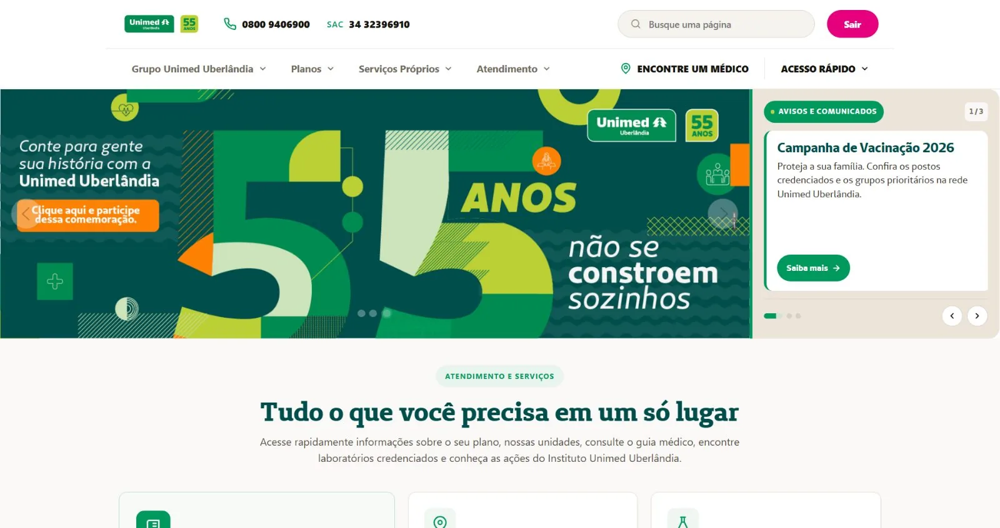
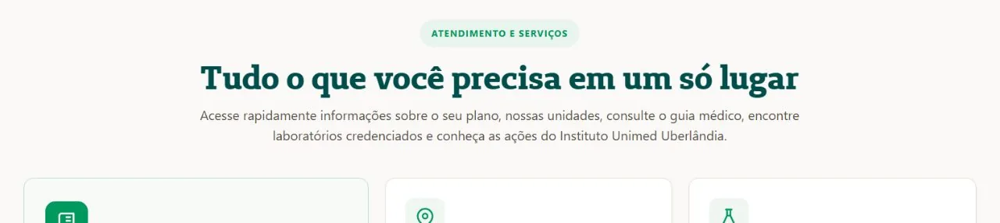

Estudo de caso · 01
Um site institucional para uma cooperativa com muitos públicos e muitos serviços. O desafio era organizar tudo isso para que beneficiário, médico ou empresa encontrasse o caminho em poucos cliques.
Unimed Uberlândia
Site institucional
UX, arquitetura e interface

01 · O problema
Um plano de saúde fala com públicos muito diferentes ao mesmo tempo. Quem tem plano quer a segunda via do boleto ou um médico perto de casa. O médico cooperado procura informações da cooperativa. A empresa quer contratar um plano. Quando tudo isso disputa o mesmo espaço, ninguém acha nada rápido e o resultado é mais ligação para a central.
Públicos misturadosConteúdo para beneficiário, cooperado e empresa no mesmo nível, sem um ponto de partida claro.
Tarefas frequentes escondidasAs ações que mais se repetem, como encontrar um médico, exigiam vários cliques.
Avisos sem lugarCampanhas e comunicados competiam com os serviços e se perdiam na página.
02 · O que eu fiz
DECISÃO 01
O menu principal separa os grandes assuntos: Grupo, Planos, Serviços Próprios e Atendimento. Ao lado, ficam fixas as duas ações mais procuradas: Encontre um médico e Acesso rápido. Telefones e busca ficam sempre no topo.
DECISÃO 02
Comunicados importantes, como a Campanha de Vacinação, ganharam um painel próprio ao lado do banner. A comunicação aparece logo na primeira tela, sem empurrar os serviços para baixo, e o time consegue trocar os avisos sem mexer no layout.
DECISÃO 03
Logo abaixo da primeira tela, um bloco reúne o que a pessoa veio fazer: informações do plano, unidades, guia médico e laboratórios. Cada serviço vira um cartão direto, com texto curto e ícone, pensado para funcionar bem no celular.

03 · Resultado
Navegação
2 cliquesPara chegar às tarefas mais comuns a partir da página inicial.
Públicos
Por perfilCada público tem um caminho próprio, sem precisar entender a estrutura da cooperativa.
Comunicação
1ª telaAvisos e campanhas visíveis logo de cara, sem competir com os serviços.